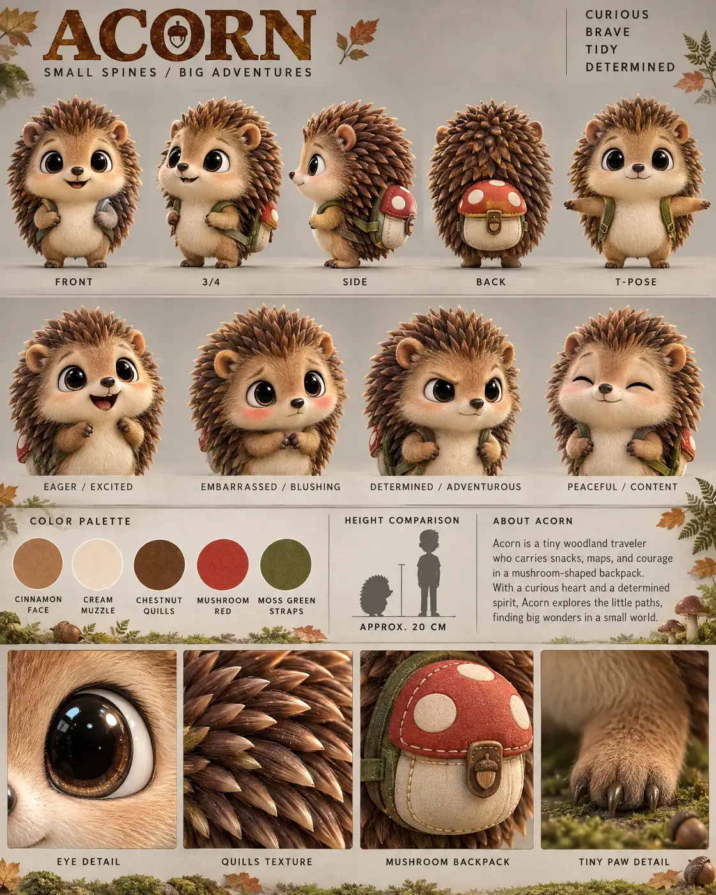

#99 of 100
Acorn
Hedgehog
Forest & MeadowSMALL SPINESBIG ADVENTURES
- Species
- Hedgehog
- Collection
- Forest & Meadow
- Height
- 20 CM
- Personality
- CURIOUSBRAVETIDYDETERMINED
- Colour palette
- CINNAMON FACECREAM MUZZLECHESTNUT QUILLSMUSHROOM REDMOSS GREEN STRAPS
- Expressions
- eager excited grin
- embarrassed blushing pout
- determined adventurous look
- peaceful closed-eye smile
- Detail panels
- EYE DETAIL
- QUILLS TEXTURE
- MUSHROOM BACKPACK
- TINY PAW DETAIL
- Character note
- Acorn — a tiny woodland traveler who carries snacks, maps, and courage in a mushroom-shaped backpack
Reference sheet prompt
Cute hedgehog named ACORN, with enormous shiny black eyes, a cinnamon-colored face, tiny rounded ears, a cream muzzle, short stubby legs, a rounded coat of soft stylized chestnut quills, and a miniature mushroom-shaped backpack with a red cap and cream spots. A tiny woodland adventurer with a determined spirit high-end 3D animated feature character reference sheet, original character design, polished cinematic family-animation aesthetic, portrait 4:5 presentation board, warm editorial model-sheet layout, top-left header reading “ACORN” with the tagline “SMALL SPINES / BIG ADVENTURES,” four personality traits in the top-right corner reading “CURIOUS / BRAVE / TIDY / DETERMINED” full-body turnaround in the top section — exactly five evenly spaced views: front / 3-4 / side / back / T-pose, quill pattern and mushroom backpack fully consistent in every view, identical body proportions, clean uppercase pose labels row of 4 bust-length facial expressions: eager excited grin, embarrassed blushing pout, determined adventurous look, peaceful closed-eye smile, quills subtly changing silhouette without changing their design color palette swatches with clean uppercase labels: CINNAMON FACE, CREAM MUZZLE, CHESTNUT QUILLS, MUSHROOM RED, MOSS GREEN STRAPS neutral warm-grey studio background with subtle woodland-floor accents: faint autumn leaves, moss-covered roots, tiny mushroom silhouettes, acorns, and low ferns appearing only in the information band and detail strip, restrained earthy tones, clear grey space behind every pose, thin section dividers, warm dappled cinematic 3-point lighting middle information band containing the color swatches, a small hedgehog silhouette beside a human height comparison, approximate height label “APPROX. 20 CM,” and a short readable character bio describing Acorn as a tiny woodland traveler who carries snacks, maps, and courage in a mushroom-shaped backpack bottom row of exactly 4 macro detail panels labeled EYE DETAIL, QUILLS TEXTURE, MUSHROOM BACKPACK, TINY PAW DETAIL, showing the reflective black eye, individually rounded quills, stitched backpack details, and tiny claws 8k render, consistent chibi proportions, large rounded head, compact body, soft stylized quills, button nose, short stubby legs, clean editorial typography, no extra characters, no duplicate quills, no busy woodland scene, no logos